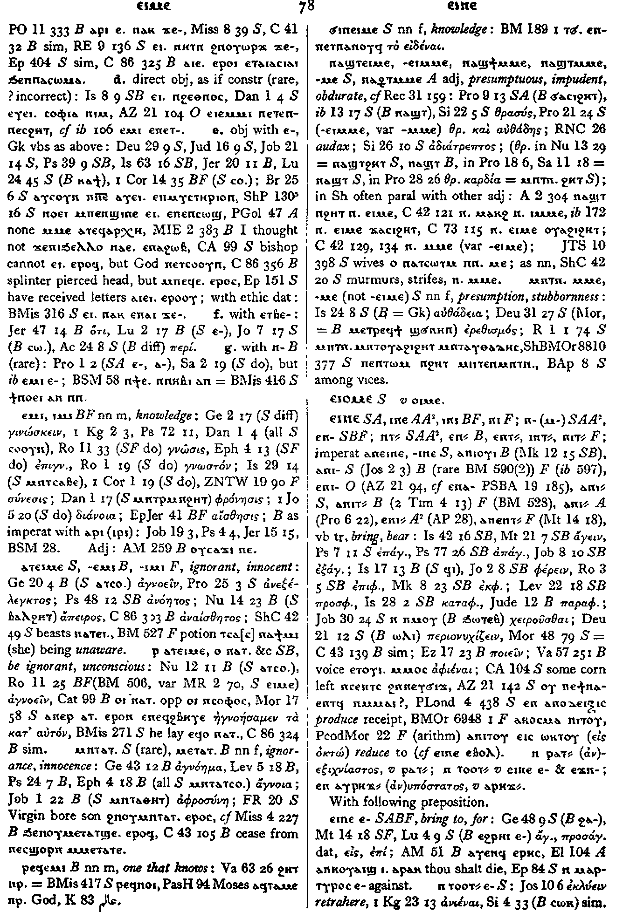

(verb)
intr: know, understand
― without obj [γινωσκειν, ειδεναι, συνειδεναι, συνιεναι, μανθανειν, νοειν]
― + ϫⲉ
― with ethic dat
― direct obj, as if constr (rare ? incorrect)
― obj with ⲉ-
― with ⲉⲧⲃⲉ-
― with ⲛ- B (rare)
― without obj [γινωσκειν, ειδεναι, συνειδεναι, συνιεναι, μανθανειν, νοειν]
― + ϫⲉ
― with ethic dat
― direct obj, as if constr (rare ? incorrect)
― obj with ⲉ-
― with ⲉⲧⲃⲉ-
― with ⲛ- B (rare)
(S)
ⲉⲓⲙⲉ,
ⲉⲓⲙⲙⲉ
(A, sA) ⲙⲙⲉ
(B) ⲉⲙⲓ
(F) ⲉⲓⲙⲓ, ⲓⲙⲓ
(O) ⲉⲙⲓ, ⲙⲙⲓ
(A, sA) ⲙⲙⲉ
(B) ⲉⲙⲓ
(F) ⲉⲓⲙⲓ, ⲓⲙⲓ
(O) ⲉⲙⲓ, ⲙⲙⲓ
| intr :8737 | Crum: 77b | ||||||||
| ϫⲉ- (c) | 8738 | ||||||||
| ⲉ- (c) | 8739 | Crum: 78a | |||||||
| ⲉⲧⲃⲉ- (c) | 8740 | ||||||||
| ⲛ- (c) | 8741 | ||||||||
| (B, F) ⲉⲙⲓ, ⲓⲙⲓ (ⲡ) | (noun male)
knowledge [γνωσισ]337 |
||||||||
| (S)
ⲁⲧⲉⲓⲙⲉ
(B) ⲁⲧⲉⲙⲓ (F) ⲁⲧⲓⲙⲓ |
ignorant, innocent [ανεξελεγκτοσ, ανοητοσ, απειροσ]338 | ||||||||
| ⲣ ⲁⲧⲉⲓⲙⲉ, ⲟ ⲛⲁⲧ. (&c) | be ignorant, unconscious [αγνοειν]339 | ||||||||
| (S)
ⲙⲛⲧⲁⲧ.
(B) ⲙⲉⲧⲁⲧ. |
ignorance, innocence [αγνοημα]340 | ||||||||
| (B) ⲣⲉϥⲉⲙⲓ (ⲡ) | (noun male)
one that knows341 |
||||||||
| (S) ϭⲓⲛⲉⲓⲙⲉ (ⲧ) | (noun female)
knowledge342 |
Crum: 78b | |||||||
| (S)
ⲛⲁϣⲧⲉⲓⲙⲉ,
ⲛⲁϣⲧⲉⲓⲙⲙⲉ,
ⲛⲁϣϯⲙⲙⲉ,
ⲛⲁϣⲧⲙⲙⲉ,
ⲛⲁϣⲧⲙⲉ
(adj.)
(A) ⲛⲁⳉⲧⲙⲙⲉ (adj.) |
(adjective)
presumptuous, impudent, obdurate [θρασυσ, αυθαδησ, αδιατρεπτοσ]343 |
||||||||
| (S) ⲙⲛⲧⲛⲁϣⲧ ⲙⲙⲉ (ⲧ) | (noun female)
presumption, stubbornness [αυθαδεια]344 |
||||||||
See also:
Crum: 77,78

77

78
Dawoud: 35b-36a

35

36